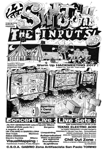

Warmup
Cosa sono
I warmup sono eventi "preparatori" ad hackmeeting. Avvengono in giro per l’italia, e possono trattare gli argomenti più disparati.
Elenco
25 Febbraio. smartphone, internet, social network: libertà o controllo?
a partire dalle ore 16.00, presso il Salone Polivalente di Bussoleno.
Una giornata per provare a dare una risposta ai propri dubbi insieme ad un legale ed altri esperti del settore.
A seguire: HackMeeting incontra il movimento notav
28 Gennaio. {,A} Social Network @ Mensa Occupata (Napoli)
a partire dalle ore 19:00
presso la Mensa Occupata in via Mezzocannone n. 14, si terrà un’iniziativa a cura di MSAck Hacklab & LabMaterialiSonori del Terzo Piano Autogestito, in collaborazione col collettivo Ippolita, che presenterà il libro Anime Elettriche.
Questo il programma della serata:
- Presentazione Libro “Anime Elettriche”: pornografia emotiva, autocontrollo e cittadinismo attivo. A cura del collettivo Ippolita.
- “Salsicce Elettriche”: cena sociale, per fare quattro chiacchiere in libertà mangiando un gustoso panino in compagnia.
- Musica a cura di dj Electric Dragon & Penguins: divertimento assicurato con il nostro elettro dj set!!!
Vi aspettiamo sabato!!!!

21 gennaio: Switch the inputs @ CSOA Gabrio (Torino)
Switch the inputs al CSOA Gabrio, a Torino.
SWITCH THE INPUTS #3
Underground Network Happening!
Eccoci con il terzo happening per cercare di mettere a fuoco il “Media-Evo” della comunicazione sociale e la progressiva perdita del senso di una realtà sempre piu’ osservata, manipolata e filtrata da dispositivi digitali, gli stessi dispositivi che molto spesso vengono mal interpretati e diventano barriere insormontabili che bloccano la crescita del individuo verso la conoscenza e lo rinchiudono in ruoli prestabiliti all’interno della società.
Tecnologia come forma di controllo del pensiero, del corpo e del desiderio, e anche tecnologia che omologa le identità tramite il gioco del compiacimento sociale, meccanismo dietro al quale si celano subdole finalità di mercato. Raramente troviamo nel mondo dei media persone che si oppongono a questo meccanismo in modo consapevole. Attraverso diverse attività cercheremo di dare il nostro punto di vista in merito, offrendo spazio a tutte le forme di cultura che si oppongo alla visione della realta normalmente accettata.
{kind=link}
2 dicembre : I padroni del web @ FAT (Torino)
I padroni del web. Tra internet, big data, fibra ottica, militari… Comunicazione virtuale, economia reale, controllo globale.
ne discutiamo con Lorenzo Coniglione, navigatore esperto e redattore di Umanità Nova.
{kind=link}
Proporre un warmup
Vuoi fare un warmup? ottimo!
- iscriviti alla [mailing list di hackmeeting](https://www.autistici.org/mailman/listinfo/hackmeeting).
- scrivi in mailing list riguardo al tuo warmup: non c’è bisogno di alcuna "approvazione ufficiale", ma segnalarlo in lista è comunque un passaggio utile per favorire dibattito e comunicazione.